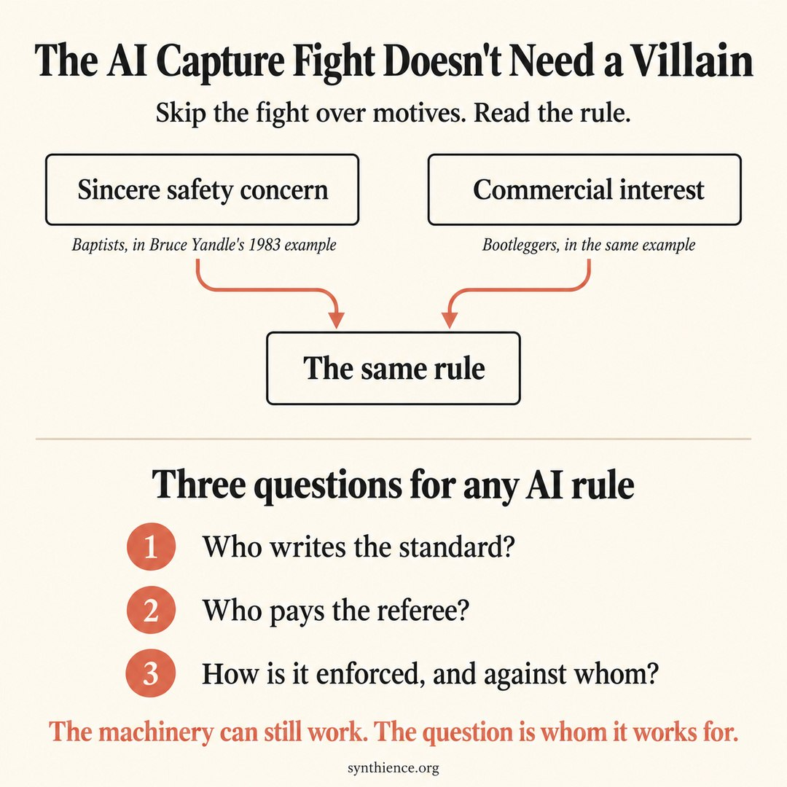

The AI Capture Fight Doesn’t Need a Villain
You don’t need to know whether the AI labs mean it. You need to know whom their rules would serve.

At 5:21 p.m. Eastern on Friday, June 12, Anthropic says, a letter arrived from the US government. That evening the company announced it was switching off its two newest AI models for every customer it had. The letter was an export control directive barring foreign nationals from using the models, and Anthropic said the net effect was that it had to pull them from everyone.
Anthropic had said publicly that the government should have the power to block unsafe deployments, “as part of a statutory process that is transparent, fair, clear, and grounded in technical facts.” This action, the company said, did not meet that standard, and it called the episode “a misunderstanding.” It said the government had given it only “verbal evidence” of the flaw at issue, though it had reviewed a demonstration of the technique, and a report it believed was behind the directive, and it said the same capability was available from rival models.
Then there is Amazon. According to The Wall Street Journal, as reported by CNBC, the directive followed conversations between US officials and Andy Jassy, Amazon’s chief executive. Amazon is a major investor in Anthropic, its cloud supplier, and a competitor in AI. Jassy, the Journal reported, told officials that Amazon researchers had prompted the model into producing information that could aid cyberattacks.
Access came back within three weeks. When it did, Anthropic announced it was drafting a framework for rating the severity of “jailbreaks,” ways of getting a model past its safeguards, together with Amazon, Microsoft, Google, and other partners, and invited other developers to join. It hoped the framework, along with its collaboration with the US government, would become “the basis for systematic rules for the whole industry.”
The episode also sat inside a wider fight with the administration. In March the Pentagon had designated Anthropic a supply-chain risk, under two different laws, after a dispute over how the military could use its models, and the two designations have since gone opposite ways in court.
June touched every point where safety policy meets commercial power: who reports a flaw, who decides to pull a product, and who writes the standard afterward. A safety concern can be real and still come from a competitor. None of it tells us who meant what. It does show how rules get made, and that is the part we can actually examine.
The fight over motives
September mixed real objections to the proposals with an argument over whether the warnings were sincere. On September 8, Jacob Coxon, a 27-year-old researcher, quit Anthropic and said in public that both it and OpenAI were racing toward superintelligence while “gambling with our lives.” His posts passed 150 million views within 36 hours. Evan Hubinger, who leads alignment stress testing at Anthropic, replied that Coxon was “correct here” and that “we really do earnestly believe AI could kill all humans,” put his own odds of that within the next decade above 10 percent, and added that he believed Anthropic was trying its best but had no plan yet to solve alignment for superintelligence.
Four days later Anthropic’s chief executive, Dario Amodei, published an essay calling for the whole industry to slow down. He committed Anthropic to letting independent evaluators work inside the company, and asked governments to require the same of its competitors.
The critics answered on both levels. David Sacks, the venture capitalist and former White House AI czar, wrote that if the labs did not slow down on their own, “we’ll know this was just another bid for regulatory capture — or an election-season psyop.” He also objected to the arrangements themselves, from the antitrust waiver the labs wanted to the independence of the evaluators. Aidan Gomez, who runs the Canadian AI company Cohere, called the effort to have a few leading labs set safety standards together “a cartel by any other name.” His objection was structural too: he supported independent review while challenging who would set the standards and who would oversee them. Those questions stand whether or not anyone’s intentions are what the critics suspect.
Then Pirate Wires reported, citing two unnamed people and an email, that a communications firm with prominent AI-safety clients had been working for Coxon and trying to book him interviews. Asked on Fox News whether he had worked with any third parties in going public, Coxon had said, “Not at all.” The report argued that his rise was “probably orchestrated,” but said it did not know when the relationship began, and it later added Nate Soares’s account that he had introduced Coxon to the firm after the post went viral. Help with interviews after a post takes off is not the same as a staged resignation, and the report itself judged it “more likely that he does believe what he’s saying.”
All of this ran alongside an IPO that could value Anthropic at more than $2 trillion. Its prospectus, as described by Reuters, gives roughly 80 of the 261 pages in its main body to risk factors, including a warning that advanced AI could pose “catastrophic or existential risks to humanity.”
So are the warnings sincere or strategic? The public record doesn’t settle it. Take the prospectus. Those pages could be honest belief. They could be legal protection, since securities law requires companies to disclose material risks and can impose liability for leaving them out. They could be a signal of how powerful the product is. They could be all three at once, and the document alone can’t tell you which.
The fight over motives may never be settled. It doesn’t need to be.
No villain required
In 1983 the economist Bruce Yandle described a pattern he had seen in Sunday liquor laws. Baptists wanted liquor stores closed on Sundays for moral reasons. Bootleggers wanted the same thing because a closed legal market was good for business. The two never had to meet, and the law served both.
Apply that to AI and the motive question falls away. Safety researchers can be entirely sincere, and on the substance they may be right. Incumbent firms can still benefit from the rules that sincerity makes possible, whether or not anyone plans it. Sincere fear supplies the legitimacy, commercial interest supplies the lobbying capacity, and the resulting rule can protect commercial advantage as well as address the stated risk. No villain is required.
This is also why the usual test of a safeguard misses it. We normally ask whether an oversight body does anything real or has become a rubber stamp. A captured regulator can pass that test. It can still inspect, license, and enforce, and firms may still need its approval to enter the market. Its decisions matter. The question is whom they serve.
At the Synthience Institute we study a failure we call form without coupling: a safeguard that keeps its shape after it has stopped doing its job. Capture is the hardest version to see, because nothing looks broken. The machinery is still connected and working, just not for the public it was built to protect. So the question to put to any AI rule is not only “is it coupled?” but “coupled, but to whom?”
A big firm coping better with a costly rule doesn’t make the rule captured; some safety is expensive. The test is whether a rule demands more than its safety purpose needs. Could a smaller developer prove it is just as safe another way? Are similar risks treated the same?
Three questions for September
None of September’s proposals is a rule yet, and the closest thing to one is voluntary. On September 29, at the White House, leaders of the largest AI companies, Anthropic’s Dario Amodei and OpenAI’s Greg Brockman among them, signed voluntary safety standards that President Trump called “morally binding.” According to the copy he posted, they committed to “four layers of controls and audits” and to meet regularly to set standards and best practices. Trump said they understood “they have to self-police.” We can’t see how any of this would work in practice, but we can examine its design now, and none of these questions requires knowing what anyone meant.
Who writes the standard? The jailbreak-severity framework has four named first drafters: Anthropic, Amazon, Microsoft, and Google. Amodei’s essay also asks for a narrow antitrust waiver so that leading labs can hold certain safety conversations together. Both may be reasonable. Both also put the largest firms early in the standard-setting process. The chair of the Federal Trade Commission, Andrew Ferguson, speaking for himself and without naming any company, has already said that when companies ask Washington for regulations and an antitrust exemption at the same time, “all of my alarm bells go off.” If these proposals become binding, the questions are who can revise the standards, which developers they cover, and whether other firms can meet them without adopting the incumbents’ own methods.
Who pays the referee? An evaluator’s independence comes down to who funds it, who appoints and can remove it, what it can inspect, and whether it can publish what it finds. Amodei’s essay names METR, a nonprofit evaluation group, as an example. Sacks says METR is “intertwined with Anthropic’s investors and staff.” METR says it takes no money from frontier AI companies and no donations made by or at the direction of their staff, though those companies give it free use of their models. Its list of past and present supporters includes the Survival and Flourishing Fund, through which Jaan Tallinn, who led Anthropic’s Series A round in 2021, gives to AI safety work.
The accord promises audits; who chooses and pays the auditors is the question it will have to answer. On September 30, the Federal Trade Commission confirmed it was investigating Anthropic, OpenAI and other AI companies over potential risks to consumers, a probe it had opened over the summer. An FTC spokesperson said the agency plans to request information from METR as well. That doesn’t mean METR is under investigation or has done anything wrong, but a regulator now wants to hear from the referee. Amodei also proposes that evaluators get the right to publish and that companies be limited in what they can redact. A law requiring evaluators would have to make protections like these enforceable, and spell out who qualifies, who pays, and what the requirement costs a lab a fraction of Anthropic’s size.
How is it enforced, and against whom? June is the test case. By Anthropic’s account the government’s evidence reached it only verbally, and the company said other developers’ models had the same capability. Alex Stamos, a former Facebook security chief who led an open letter asking for the order to be lifted, said the rules need to be “written down and transparent,” and that this had not happened. On that account, the intervention left real questions open: what risk justified pulling the models, whether comparable systems were treated alike, and whether a narrower restriction would have protected the public as well. A competitor’s report can justify action. It doesn’t excuse the government from explaining why the action was as broad as it was.
The questions cut both ways
These questions are not an argument for regulation or against it. A federal law that wipes out stricter state rules can protect incumbents as well as any licensing regime. So can leaving things as they are, where the cost of frontier development already favors firms with vast resources.
The money runs both ways too. In February, Anthropic announced a $20 million contribution to Public First Action, a bipartisan political nonprofit that promotes AI safeguards. Leading the Future, a super PAC backed by OpenAI co-founder Greg Brockman and the venture firm Andreessen Horowitz, said it and its affiliates had raised about $125 million in 2025, counting commitments, to back candidates who favor one national standard over state-by-state rules. The two sums are different kinds of money, but both are money lining up behind rival visions of AI policy.
Nor is this a claim that the fear is manufactured. The risks of increasingly capable AI are serious. But sincerity only protects the people who hold it from the charge of bad faith. It does not protect the rules they help produce from being bent toward someone else’s interest.
If these proposals become rules, the argument about motives may still be running. Don’t wait for it. Read the rule. Ask what harm each requirement addresses, and whether a route open to smaller firms would protect as well. Ask who is exempt, who wrote the standard, who pays the referee, and how it has been enforced. Ask what the rule does and whom it serves.
Events as of October 1, 2026.
Sources
Anthropic. “Statement on the US government directive to suspend access to Fable 5 and Mythos 5.” June 12, 2026.
CNBC. “Anthropic asked for regulation. Washington went much further.” June 17, 2026.
Reuters. “Exclusive: Anthropic IPO prospectus lays bare deep dependence on Big Tech partners.” September 29, 2026 (via U.S. News & World Report).
Anthropic. “Redeploying Claude Fable 5.” June 30, 2026, updated July 1, 2026.
CNBC. “Judge blocks Pentagon blacklist of Anthropic as supply chain risk.” August 27, 2026.
CNBC. “U.S. appeals court upholds Pentagon designation of Anthropic as supply chain risk.” September 25, 2026.
US Court of Appeals for the D.C. Circuit. Anthropic PBC v. United States Department of War, No. 26-1049 (consolidated with No. 26-1162). Decided September 25, 2026.
Booth, H. “He Helped Build Powerful AI at OpenAI and Anthropic. Now He’s Afraid It Could Kill Us.” TIME, September 9, 2026.
Perrigo, B., Booth, H., & Nix, N. “The AI Tipping Point.” TIME, September 15, 2026.
Amodei, D. “We Must Pace the Frontier.” darioamodei.com, September 12, 2026.
Sacks, D. Post on X, September 12, 2026. https://x.com/DavidSacks/status/2098973625252708460
Gomez, A. “Who Gets to Define the Rules for AI?” Cohere, September 13, 2026.
Ryerson, H. “EXCLUSIVE: Jacob Coxon Worked With Doomer PR Firm.” Pirate Wires, September 24, 2026 (US time; updated after publication).
Reuters. “Anthropic’s IPO prospectus shows sweeping AI vision, surging costs.” September 28, 2026 (via CNBC).
Wang, E., & Soni, A. “Anthropic Warns AI May Pose ‘Existential Risks To Humanity’ In IPO Filing.” Reuters, September 28, 2026 (via HuffPost, September 29).
US Securities and Exchange Commission, Regulation S-K, Item 105, Risk factors (17 CFR 229.105); Securities Act of 1933, Section 11 (15 U.S.C. 77k).
Yandle, B. (1983). Bootleggers and Baptists: The education of a regulatory economist. Regulation, 7(3), 12-16.
Gantz, T. W. (2026). Form Without Coupling: One Structural Failure Across Five Layers of AI Governance (SI0001). Synthience Institute. Clarification to Section 5 added October 2026.
CBS News. “FTC investigating Anthropic, OpenAI and other companies over potential AI risks.” September 30, 2026.
Reuters. “FTC chair suspicious of calls for AI antitrust exemptions.” September 15, 2026 (syndicated).
METR. “Funding update.” August 14, 2026.
Survival and Flourishing Fund. “SFF Initiative Committee” (table of gifts and grants, source Jaan Tallinn).
Anthropic. “Anthropic raises $124 million to build more reliable, general AI systems.” May 28, 2021.
Stamos, A., et al. “An Open Letter On Transparent AI Cyber Protections.” June 14, 2026.
Anthropic. “Anthropic is donating $20 million to Public First Action.” February 12, 2026.
CNBC. “AI industry super PAC raises $125 million in 2025.” January 30, 2026.
The American Prospect. “First AIPAC, Now AI PACs.” February 20, 2026.
Further reading
- SI0001: Form Without Coupling: the diagnostic this essay applies to AI rules.
- SI-WP-010: The Function Got Redefined Underneath the Work: Section 6.4 engages regulatory capture as one of the strongest objections to licensing-as-architecture and names the design features that resist it.
- SI-WP-012: Control Without a Coupling: why real-time human control of a fast AI loop is structurally voided.
- FN-017: Control Without Accountability: a worked scenario of a neutral criterion that advantages incumbents.
Published documents are also archived with permanent DOIs at the Synthience Institute community on Zenodo.